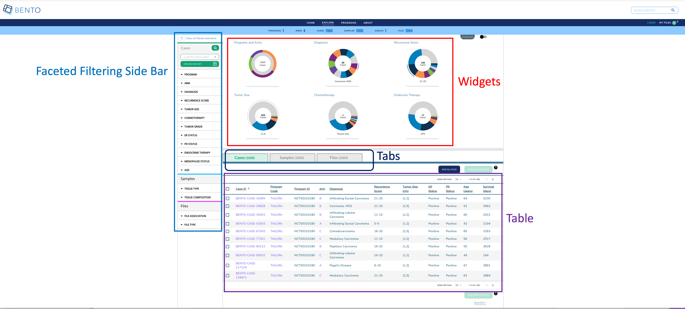
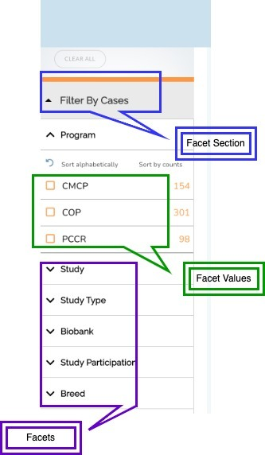

10. The Explore Dashboard¶
The Explore Dashboard enables cohort discovery and cohort building. Users can filter data entities of interest via a comprehensive faceted filtering sidebar alongside a dynamic query bar and graphical summaries of the data. Cohorts can be added to the Cart to produce an exportable File Manifest.

Explore Dashboard. Displayed are the configurable elements of a Bento Explore Dashboard: widgets, faceted filtering, table, and tabs.
10.1. Prerequisites¶
The files that specify the configuration parameters of the Explore Dashboard are stored in GitHub
https://github.com/CBIIT/bento-frontend(representing your GitHub username asYOUR-USERNAME). Create a local clone of your fork into a local directory, represented in these instructions as$(src).Configuration parameters for the Explore Dashboard elements can be specified in the file:
$(src)/packages/bento-frontend/src/bento/dashTemplate.js.All images and icons used in a Bento instance should be accessible via a public url.
Please review the list of GraphQL queries to select query types that return data of interest.
10.2. Configuring the Dashboard Widgets¶
Dashboard Widgets provide a graphical summary of the key data entities in a Bento-based data sharing platform. In this version of Bento, 3, 4, or 6 widgets can be added. If more than 6 widgets are added, Bento will display the first 6 widgets without any error or warning message.
Open
$(src)/packages/bento-frontend/src/bento/dashTemplate.js.Under
widgetConfigadd an object{ type, label, dataName, ... }to represent a widget.Set the field
typeto the type of widget to be displayed. Valid values are ‘donut’ and ‘sunburst’.Set the field
titleto the display title for the widget.Set the field
dataNameto the name of the GraphQL API query that returns data for the widget.Sunburst widgets display two types of data within a single plot. If the widget is of type ‘sunburst’, set the fields
datatable_level1_fieldanddatatable_level2_fieldto the specific fields in the GraphQL API query that returns data for the sunburst. The fielddatatable_level1_fielddrives the inner ring of of the sunburst. The fielddatatable_level2_fielddrives the outer ring of of the sunburst.Sunburst widgets allow the custodian to override the default color schemes. Set the fields
datatable_level1_colorsanddatatable_level2_colorsto override the default colors for the inner and outer rings of the widget, respectively. These fields should contain arrays of colors in hex format with no minimum or maximum number of entries. Colors will be repeated if there are more data points than colors in the array.Enter all GraphQL API queries that drive the widgets in
GET_DASHBOARD_DATA_QUERY.
Example:
export const widgetConfig = [
{
type: 'sunburst',
title: '<Widget Label>',
dataName: '<GraphQL API query that returns data for widget>',
datatable_level1_field: '<GraphQL field for inner ring>',
datatable_level1_colors: ['#eee', '#ddd', '#ccc']
datatable_level2_field: '<GraphQL field for outer ring>',
datatable_level2_colors: ['#fff', '#000', '#ccc'],
},
{
type: 'donut',
title: '<Widget Label>',
dataName: '<GraphQL API query that returns data for widget>',
},
];
// ...
export const GET_DASHBOARD_DATA_QUERY = gql`{
GraphQL API query{
API query field
}
};
10.3. Configuring Faceted Filtering¶
Facet filters allow an end user to search for data of interest by applying multiple filters, based on faceted classification of stored data entities.
The faceted filtering on the Side Bar can be organized into into facet sections, each with a maximum count of 15 facets that are associated with facet values that can be used for filtering data upon selecting the respective checkboxes.

10.3.1. Configuring Facet Sections¶
Open the configuration file located at
$(src)/packages/bento-frontend/src/bento/dashTemplate.js(in the “CBIIT/bento-frontend” git repo)
The variable facetSectionVariables controls the sections available in the facet filtering sidebar. Each section is defined as follows:
isExpanded: controls if the section is expanded or collapsed by default (must betrueorfalse)hasSearch: controls if the section displays the Local Find search bar (must betrueorfalse)
For Example:
export const facetSectionVariables = {
Cases: {
isExpanded: true,
hasSearch: true,
},
Samples: {
isExpanded: true,
},
// ... other facet sections
};
10.3.2. Configuring Facet Filters¶
Open the configuration file located at
$(src)/packages/bento-frontend/src/bento/dashTemplate.js(in the “CBIIT/bento-frontend” git repo)To represent a facet, edit or create a facet object under the
facetsConfigobjectEach facet is defined as follows:
section: the facet section that the facet should appear in the sidebar. Default options include:CASES,SAMPLES,FILES.label: the display label for the facet that appears in the sidebarfield: the specific field in the GraphQL API query, as theapiapi: the GraphQL api query:GET_DASHBOARD_DATA_QUERYreturns data for the facet. (It is in the same file:dashboardData.js)
datafield: the variable used to cross-reference/pass data to widgets and dashboard data tables, see:$(src)/packages/bento-frontend/src/bento/dashboardTabData.js(described in Dashboard: Tabs and Tables)show: controls if the facet is displayed or hidden (must betrueorfalse)Note that the order of the facet sections and individual facets nested in each facet section is controlled by the order of the entries of the facets in the
facetsConfigobject
For Example:
export const facetsConfig = [
{
section: CASES,
label: 'Program',
apiPath: 'subjectCountByProgram',
apiForFiltering: 'filterSubjectCountByProgram',
datafield: 'programs',
field: GROUP,
type: InputTypes.CHECKBOX,
sort_type: sortType.ALPHABET,
show: true,
},
{
section: CASES,
label: 'Arm',
apiPath: 'subjectCountByStudy',
apiForFiltering: 'filterSubjectCountByStudy',
datafield: 'studies',
field: GROUP,
type: InputTypes.CHECKBOX,
sort_type: sortType.ALPHABET,
show: true,
},
{
section: SAMPLES,
label: 'Tissue Composition',
apiPath: 'subjectCountByTissueComposition',
apiForFiltering: 'filterSubjectCountByTissueComposition',
datafield: 'composition',
field: GROUP,
type: InputTypes.CHECKBOX,
sort_type: sortType.ALPHABET,
show: true,
},
{
section: FILES,
label: 'File Association',
apiPath: 'subjectCountByFileAssociation',
apiForFiltering: 'filterSubjectCountByFileAssociation',
datafield: 'association',
field: GROUP,
type: InputTypes.CHECKBOX,
sort_type: sortType.ALPHABET,
show: true,
},
];
NOTE: Update the GraphQL API Query in GET_DASHBOARD_DATA_QUERY as needed; it should contain all queries and fields that are associated with facets being displayed.
10.4. Configuring Dashboard Tables & Tabs¶
The Explore Dashboard is structured to organize the data tables using tabs beneath the widgets. The Dashboard Table can be configured to list key data entities in ab Bento-based data sharing platform along with a list of key data entity attributes. In the Bento reference implementation the Dashboard Table lists the cases (or study subjects) in the program.
10.4.1. Tab Configuration¶
Open
$(src)/packages/bento-frontend/src/bento/dashboardTabData.jsTo change Properties of tab go to
tabContainersobject:
name: Text to show on tabdataField: specifies what data appears in the column, field must be from the GraphQL API query
NOTE: the order of the entries in tabs should match the order in the tabsIndex object. This is the order that the tabs will be displayed left to right on the UI.
To change the style of the tabs go to tabIndex object:
title: Text to shown on tabprimaryColor: background color when tab is selectedselectedColor: font color when tab is selected
NOTE: The order of the entries in tabIndex should match the order in the tabs object. This is the order that the tabs will be displayed left to right on the UI.
10.4.2. Table Configuration¶
Open
$(src)/packages/bento-frontend/src/bento/dashboardTabData.jsThe
tabContainersobject is an array of tables, with each table object having the following fields:
dataField: field name in “Data” object to get values for table.
NOTE: This field should be in the GraphQL API query specified in the api field.
defaultSortField: Value must be one of the ‘dataField’ in columns.defaultSortDirection: Sort default column in Ascending or Descending order (value must beascordesc)buttonText: Text to appear on Add to cart buttonsaveButtonDefaultStyle: Style of on Add to cart button, with fields such ascolor: '#fff', backgroundColor: '#09A175', opacity: '1', border: '0px', cursor: 'pointer',
ActiveSaveButtonDefaultStyle: Style of on Add to cart button when it is active modeDeactiveSaveButtonDefaultStyle: Style of on Add to cart button when it is disabled modecolumns: a list of column objects. There is a maximum limit of 10 columns. If more than 10 columns are added, Bento will display the first 10 columns without an error or warning message. The top-down order of columns will be displayed left to right on the UI. Each column object is described by the following fields:dataField: specifies what data appears in the column, field must be from the GraphQL API queryheader: Heading Text for columnsort: sort order for columnmust be
ascordesc
primary: applies to primary field of table like “sample_ID” or “File_ID” based on which files will be added in to cart.must be
trueorfalse
display: Show or Hide columnmust be
trueorfalse
cellType: define column type based on role (Checkbox, links)cellTypes.CHECKBOX (selecting rows), cellTypes.LINK (e.g. Case ID column), default value text
dataFromRoot: Get data from parent element.must be
trueorfalse
linkAttr: Hyperlink to internal or external page. The value can be injected in link dynamically using{linkAttr}, for example:// Internal Link linkAttr: { rootPath: '/case', //provide rootPath, pathParams: ['subject_id'], //provide array of pathparm (bento-core will dynamically create path based on the pathParams) } ### Internal Links in the Explore Dashboard Table 1. links starting with `/` are considered as internal links. 2. Internal links will be opened in the same tab. 3. Dynamic links can be generated by passing a valid table field to `{}`. For example, `/program/{program_id}` will link to `program/NCT00310180`. // External Link can be configured with a custom element (cellTypes.CUSTOM_ELEM)id: id for the table (required for test automation)tableID: id for the table (required for test automation)Set the field
tableMsgto display empty table.Set the field
dataKeyto track selected rows in the table (Note: select row feature required unique field to track selected rows).extendedViewConfigprovides option to add pagination, download button and manage column view component above header column.set pagination to
truefor paginationset manageViewColumns to
truefor manageViewColumns (set columnroleto cellTypes.DISPLAY)set download to
trueto display download button
WrapperConfig:
Set the field
addFilesRequestVariableKeyfield to add files to cart.Set the field
addAllFileQueryquery to add all files to the cart.Set the field
addAllFilesResponseKeysto access the response data provided by addAllFileQuery.Set the field
addSelectedFilesQueryquery to add selected files to the cart.Set the field
addFilesResponseKeysto access the response data provided by addSelectedFilesQuery.
:warning: WARNING: You can add a maximum of 10 columns to the dashboard tab table. If you add more than 10 columns, Bento will display only the first ten columns, without any warning or error message
### External Links in the Explore Dashboard Table
1. External links should start with `http://` or `https://`.
2. External links should show-up with `externalLinkIcon`.
3. External link will be opened in a new tab.
4. Dynamic links can be generated by passing a valid table filed to `{}`.
For example, `https://pubmed.ncbi.nlm.nih.gov/{pubmed_id}` will link to `https://pubmed.ncbi.nlm.nih.gov/29860917/`
:warning: WARNING: A maximum of 10 columns can be added to the dashboard tab table. If adding more than 10 columns, Bento will display only the first ten columns, without any warning or error message
10.4.3. Tool Tips¶
To change Properties of tool tip for each tab, table go to tooltipContent object:
icon: The help tip icon that appears next to the ‘add button’alt: alt for the tooltip image0,1,2: tooltip content for first tab, second tab and third tab.
10.4.4. GraphQL to Power the Explore Dashboard¶
The GraphQL Query used in the Explore Dashboard page is defined in DASHBOARD_QUERY. For example:
// GraphQL query to retrieve detailed info for a case
export const DASHBOARD_QUERY = gql`{
numberOfPrograms
numberOfStudies
numberOfSubjects
numberOfSamples
numberOfLabProcedures
numberOfFiles
subjectCountByProgram{
group
subjects
}
...
fileOverview {
file_id
file_name
association
file_description
file_format
file_size
program
arm
subject_id
sample_id
diagnosis
}
}`;
10.4.5. Suggested Best Practices¶
Dimension of the External Link Icon = 16 X 16 pixels.
All images should have a resolution >= 72 ppi and should be in the PNG format.